Pembekalan & Pemasangan
Skop penuh: gabion cage PVC coated 1m×1m×1m, geotextile TS50, batu kuari 6"×9" dan tenaga kerja — satu kadar, satu kontraktor.
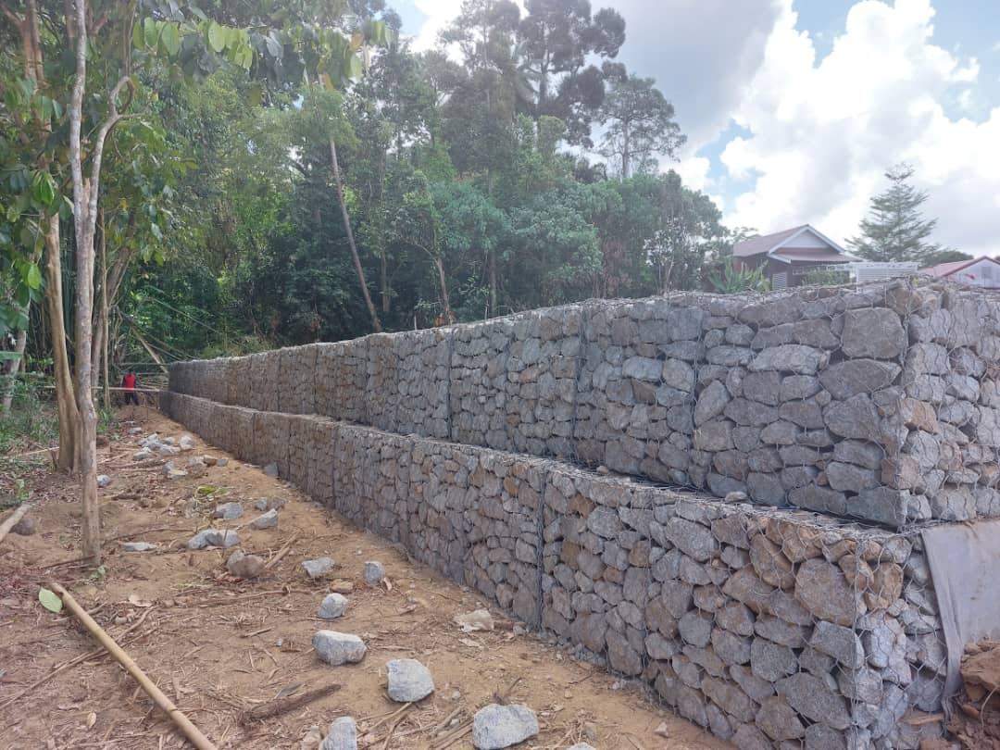
Kontraktor Gabion Wall Malaysia · Sejak 1997
Tanah runtuh, cerun terhakis atau tebing longkang mendap? Kami bina gabion wall bergred kejuruteraan yang tahan puluhan tahun — pada harga yang masuk akal, dengan kemasan yang anda boleh banggakan.
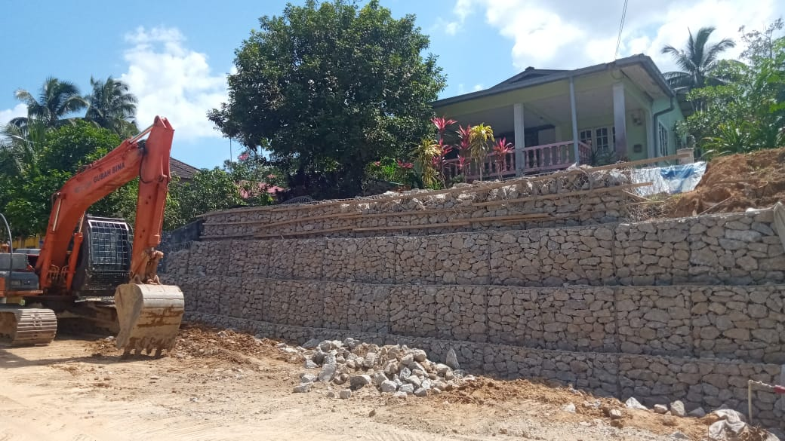
01 — Apa Itu Gabion Wall
Gabion wall ialah tembok penahan yang dibina daripada sangkar dawai bergalvani (gabion basket), diisi padat dengan batu granit pecah. Berat batu itu sendiri yang menahan tekanan tanah — ia bertindak sebagai tembok graviti tanpa memerlukan tetulang besi atau asas konkrit besar.
Kelebihan terbesarnya ialah telap air. Air bawah tanah mengalir keluar melalui rongga antara batu, jadi tiada tekanan hidrostatik terkumpul di belakang tembok — punca utama tembok konkrit retak dan tumbang di iklim hujan lebat Malaysia.
02 — Perkhidmatan
Kami tidak ambil kerja tembok konkrit. Satu kepakaran, dari bekalan cage sampai susunan batu akhir.
Skop penuh: gabion cage PVC coated 1m×1m×1m, geotextile TS50, batu kuari 6"×9" dan tenaga kerja — satu kadar, satu kontraktor.
Gabion wall di kaki cerun untuk mengurangkan risiko hakisan dan menstabilkan kawasan tanah yang terdedah.
Gabion wall di tebing sungai dan parit besar. Struktur telap air yang tahan arus tanpa terkumpul tekanan di belakangnya.
Penstabilan tanah di tapak loji dan kawasan perindustrian. Kami sudah laksanakan kerja untuk kontraktor utama projek industri.
Gabion wall sebagai ciri landskap, pagar dan teres. Tekstur batu semula jadi yang kekal cantik tanpa penyelenggaraan.
Ada kru sendiri? Kami boleh bekalkan gabion cage PVC coated dan geotextile TS50 tanpa kerja pemasangan.
03 — Gabion vs Konkrit
Bandingkan sendiri sebelum anda buat keputusan.
| Faktor | Gabion Wall | Tembok Konkrit |
|---|---|---|
| Saliran air | Telap sepenuhnya, tiada tekanan air | Perlu weep hole, mudah tersumbat |
| Pergerakan tanah | Fleksibel, mendap tanpa retak | Tegar, retak bila tanah bergerak |
| Masa pembinaan | Pantas, tiada masa menunggu konkrit | Perlu 21–28 hari konkrit matang |
| Asas struktur | Tiada asas konkrit besar diperlukan | Perlu asas & kerja bekisting |
| Penyelenggaraan | Hampir sifar | Perlu tampal retak berkala |
| Rupa & landskap | Tekstur batu semula jadi | Permukaan keras, perlu kemasan |
04 — Portfolio
Setiap gambar di bawah adalah kerja sebenar oleh kru Gubah Bina — tiada gambar stok.
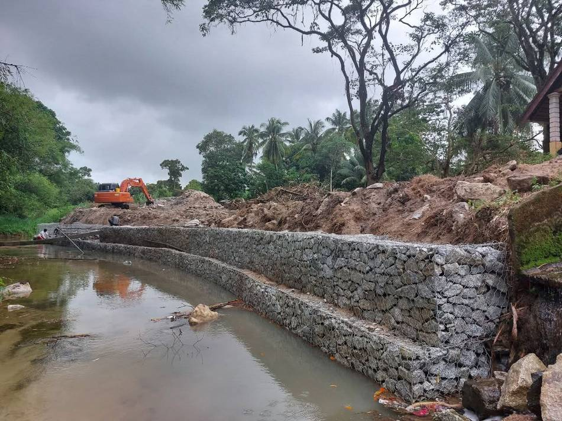
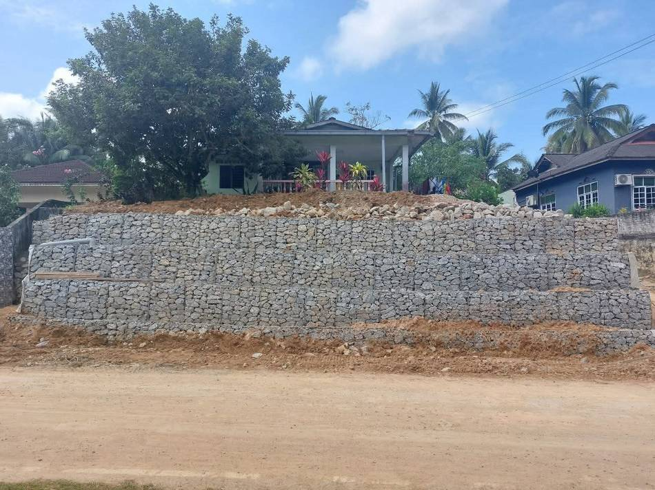
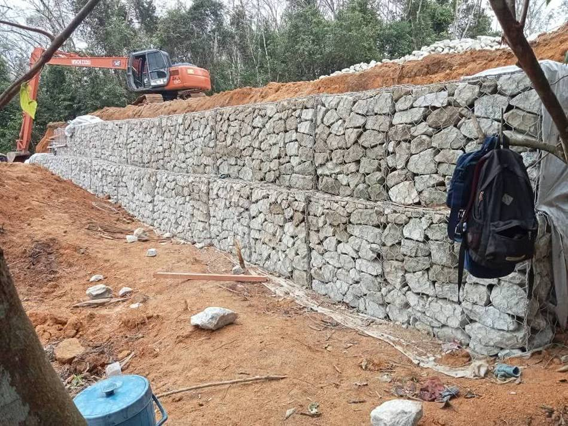
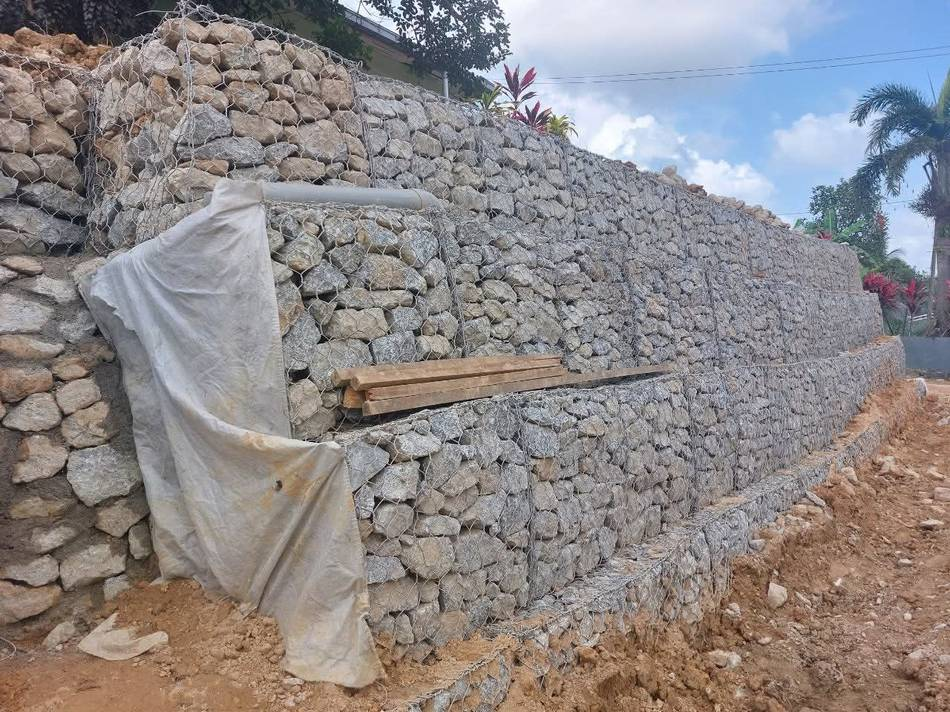
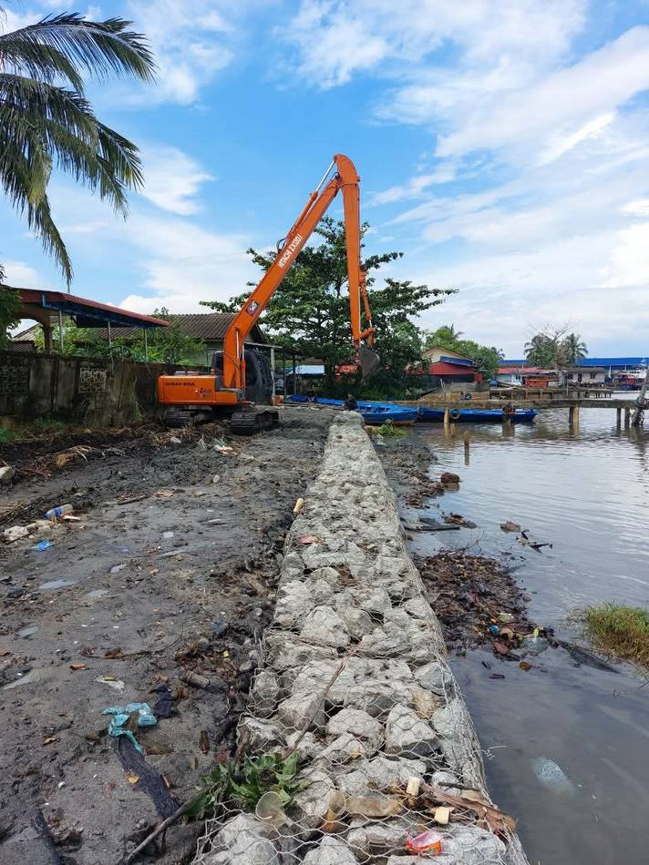
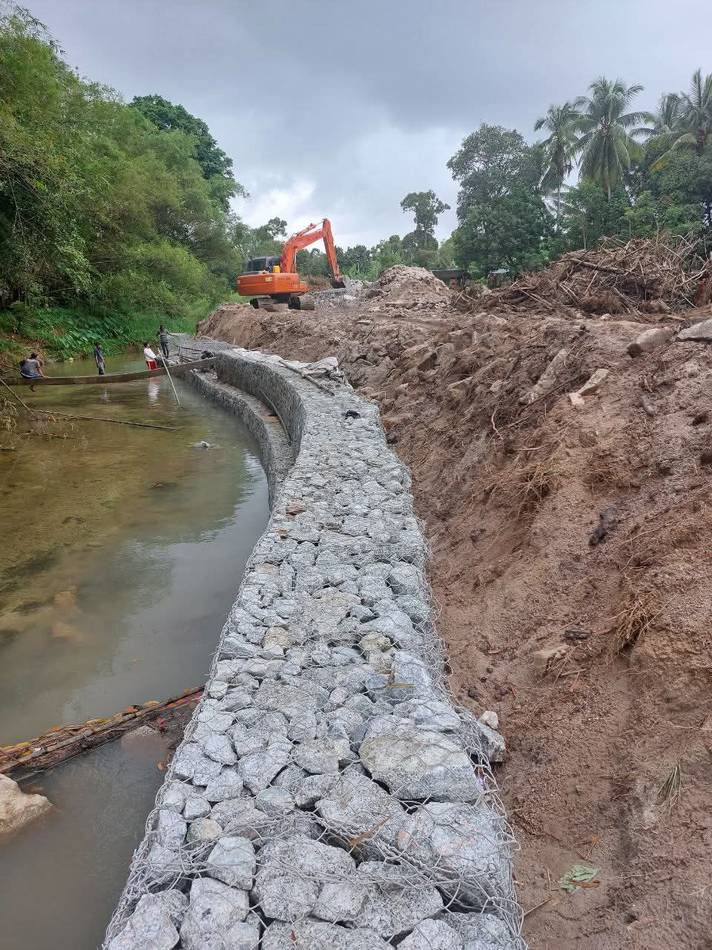
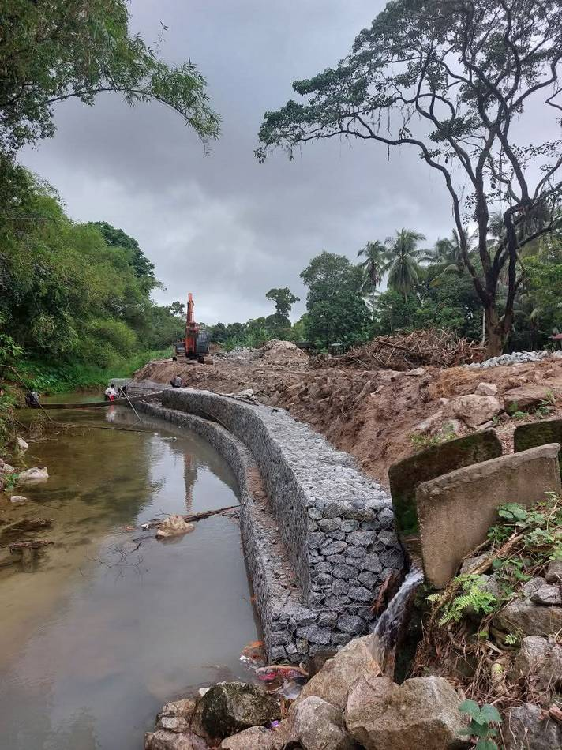
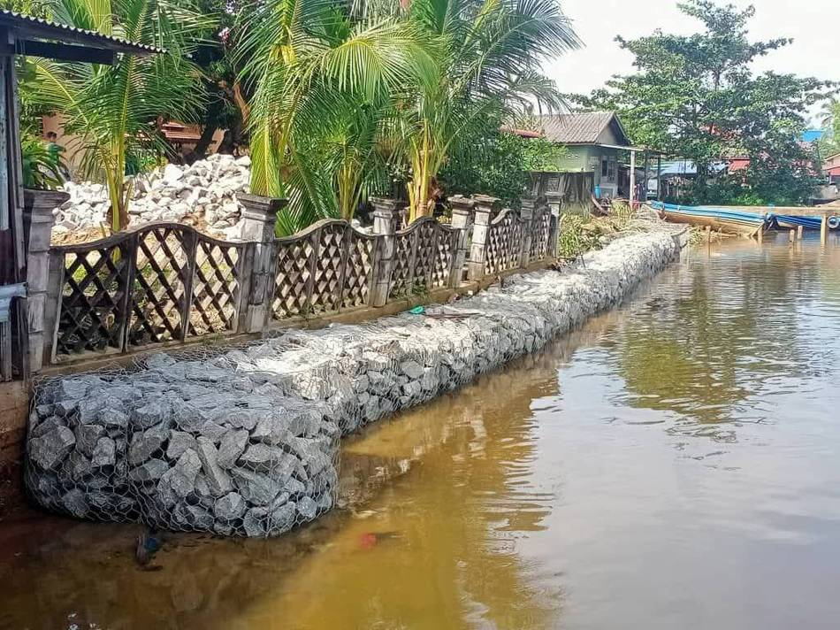
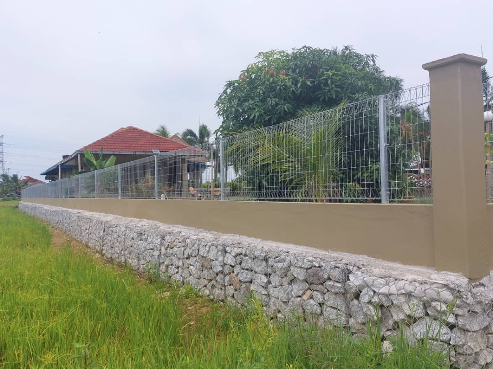
Nak lihat projek berdekatan kawasan anda? Minta portfolio penuh di WhatsApp →
05 — Skop Kerja
Urutan yang sama kami ikut di setiap tapak, dan yang sama direkodkan dalam laporan penyiapan projek.
Periksa keadaan tapak, ukur panjang dan ketinggian, kira isipadu gabion yang diperlukan.
Bersihkan kawasan pemasangan, sediakan dan ratakan permukaan asas.
Pasang lapisan geotextile TS50 mengikut kawasan pemasangan sebelum cage diletakkan.
Sediakan dan pasang gabion cage PVC coated 1m×1m×1m, kemudian susun dan sambung antara satu sama lain.
Isi batu kuari 6"×9" dan susun padat bagi memastikan kestabilan struktur.
06 — Kadar Harga
Kami tidak kira per meter persegi. Gabion wall dikira mengikut meter padu (m³) isipadu gabion — jadi anda bayar ikut saiz sebenar struktur.
Kadar kerja gabion wall
RM475setiap meter padu (m³) isipadu gabion
Cara ia dikira
Panjang × Tinggi × Lebar = Isipadu (m³) × RM475
Contoh: gabion wall 20 m panjang × 2 m tinggi × 1 m lebar = 40 m³ × RM475 = RM19,000
Nota: Sebut harga rasmi sah selama 30 hari dari tarikh dikeluarkan. Jadual bayaran dan tarikh mula kerja akan dipersetujui bersama sebelum kerja dimulakan.
07 — Kenapa Gubah Bina
Kami mula kerja tanah dan pembinaan sejak 1997. Pada 17 Julai 2019, perniagaan itu diperbadankan sebagai Gubah Bina Sdn. Bhd. di bawah Akta Syarikat 2016 dan berdaftar dengan Suruhanjaya Syarikat Malaysia — pengalaman lama, dengan entiti sah yang boleh anda semak sendiri.
Butiran di atas boleh disahkan melalui portal rasmi SSM menggunakan nombor pendaftaran syarikat.
08 — Soalan Lazim
Kadar kami ialah RM475.00 setiap meter padu (m³) isipadu gabion — bukan per meter persegi. Isipadu dikira daripada panjang × tinggi × lebar struktur. Contohnya gabion wall 20m × 2m × 1m = 40 m³, iaitu RM19,000. Kadar ini sudah termasuk gabion cage PVC coated, geotextile TS50, batu kuari dan tenaga kerja pemasangan.
Kami guna gabion cage PVC coated dengan ketebalan wire 2.7mm sebagai standard. Salutan PVC melindungi dawai daripada karat, jadi ia sesuai untuk kawasan lembap, tepi sungai dan tapak industri — struktur gabion jenis ini bertahan berpuluh tahun.
Tidak. Kami buat gabion wall sahaja. Kami tidak mengambil kerja tembok konkrit bertetulang. Fokus pada satu jenis kerja inilah yang membolehkan kami kawal kualiti susunan batu dan kadar harga.
Ya. Gubah Bina Sdn. Bhd. ialah syarikat sendirian berhad berdaftar dengan Suruhanjaya Syarikat Malaysia, nombor pendaftaran 201901025225 (1334554-P), diperbadankan pada 17 Julai 2019 di bawah Akta Syarikat 2016. Kami sudah berada dalam industri pembinaan sejak 1997 sebelum perniagaan itu diperbadankan sebagai Sdn. Bhd. Anda boleh sahkan pendaftaran melalui portal rasmi SSM.
Untuk tembok rendah dalam kawasan kediaman persendirian, biasanya tidak diperlukan. Untuk tembok melebihi 3 meter atau projek di tanah rizab, pelan yang disahkan jurutera profesional diperlukan. Kami boleh bantu uruskan proses tersebut.
Bergantung pada panjang dan isipadu. Sebagai rujukan, projek gabion wall 24 meter di Sungai Pengorak, Gebeng, Pahang siap dalam 5 hari bekerja. Gabion tidak perlu menunggu konkrit keras, jadi kerja berjalan jauh lebih pantas berbanding tembok konvensional.
Batu kuari bersaiz 6" × 9" — cukup besar supaya tidak terkeluar melalui mata jaring, dan disusun padat (bukan sekadar dicurah) bagi memastikan kestabilan struktur.
Pejabat kami di Kota Bharu, Kelantan. Kami beroperasi di seluruh Semenanjung Malaysia — Kelantan, Terengganu, Pahang, Selangor, Kuala Lumpur, Perak, Johor, Melaka, Negeri Sembilan, Pulau Pinang, Kedah dan Perlis.
Hubungi Kami
Hantar butiran ringkas projek anda. Kami akan hubungi semula dalam masa 24 jam untuk atur tinjauan tapak — percuma dan tiada obligasi.
201901025225 (1334554-P)
Isi ringkas — kami balas melalui WhatsApp.